Home
AlaskaStories.com
Stories 12....
Page contents:
07 Moose Chase: Hunting
Scotch and Cigars: Society
07 Big Bottle Party: Society
07 Christmas form letter: Christmas
08 Chitina Dipnetting: Fishing
Hey, this aint no bullshit...
07 Moo Chase.....
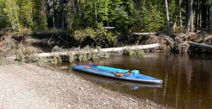
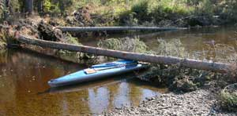
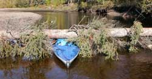
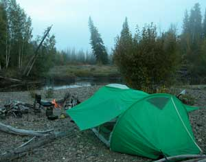
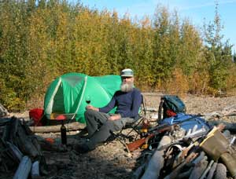
There
I was, mind you, and it was desperate indeed, albeit as usual.
How desperate? I showed up at Secret Creek, in the far north,
and the water was lower than I had ever seen it in the last 117
years. That is low. I may not have seen it most of those years,
but neither has anyone else, because it is Secret Creek. I recognized
right from the get-go that I would be digging trenches through
the rocks to get back down the creek if I had a moose load in
the kayak. I was a little worried about getting up the creek with
the load of 4 bottles of fine wine I was carrying. Pay no attention
to the photos that have plenty of water. I did not take photos
of the really shallow areas where the creek fans out over rocks,
or tumbles through them, because I was occupied with the kayak.
I am not an astute photo person. All the good photos are left
out in the woods.
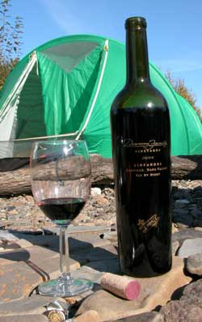
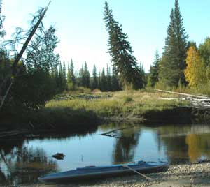
After
a chit chat with the two women from Haines, who were doing the
same thing I was, but with a raft and more sense in regard to
the shorter distance they intended to go upstream, I was off on
the trudge along the muddy bank that is usually under water.
Back and forth, back and forth, back and forth along the incessantly
back and forth loops of Secret Creek meandering through paradise
graced with golden-leafed autumn birch trees in a hunter green
spruce forest.
Things did not look promising with an unusually large number
of black bear tracks trampling the usual large number of wolf
tracks, and an abject dearth of moose tracks. The competition
was serious. Fortunately I was not hunting the tracks.
At the first sharp rock riffle where any wise person would
recognize the hard work and threat to a boat coming back through
the rocks with a load, I encountered a couple of just such people.
We chit chatted by their nice morning camp fire, mostly telling
bear stories. You meet the nicest people out where everyone went
to get away from each other. It was good moose habitat, a place
to hang out and hunt. Lacking such wisdom, I continued on, as
usual.
I was soon beyond any human competition, what with dragging
my kayak over enough rocks to turn back those made timid by good
sense. The large fallen spruce tree, completely crossing the creek,
would stop anyone too impatient to saw through such a tree, not
portage around it, and not able to squeeze under it like did I.
If the water rose while I was upstream, I would have an easier
return, until I reached that tree.
I spotted the first old fossil bone about mid day, a bison
atlas vertebra at the water's edge, barely showing above the rocks.
Only a few steps beyond it I decided to go back to make sure it
was not the piece of wood I first suspected. It was not. Of course
that enticed me to keep watching the rocks at my feet, to find
more cool fossil bones, while the mooses in the trees watched
me stumble by.
At the first cliff area the peregrine falcons greeted me, as
they have each year, and put on a bit of a flying show, as usual.
After the traditionally laborious first day of effort I reached
my traditional first camp, which is inviting to anyone, nicely
prepared. Not a stick out of place, indicating the otherwise probability
that no one had been in the valley since I left last year. I had
the tent up and was sitting in a chair, with a glass of wonderful
Downing Family Zinfandel well before the warm sun threatened the
horizon. I casually strolled about, spiffing up the area, as humans
do around their habitations, and listened to the critters back
in the trees.
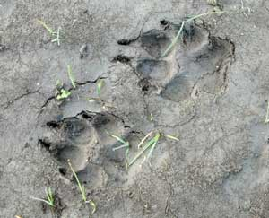
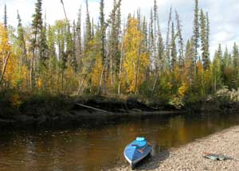
Enjoying in the warm dry weather I was cognizant of the already
low creek, and the possibility of it getting lower. I wanted to
know just how low it might get at what rate. For just such analyses
I had brought a water level gauge I had made from angle aluminum,
painted white and red every inch. I stuck it in the creek, out
in the calm water of the beaver semi-pond in front of my camp,
placing it solidly down in the rocks. It is barely visible above
the kayak in the photo.
The beaver came out in the evening, and made known their annual
irritation at my presence by slapping the water a few dozen times
throughout the night. Apparently they were sufficiently miffed
at my intrusion that they dug up my water level gauge and added
it to their trophy room. It was gone in the morning. That was
a cool little home-made water gauge that I had carefully painted
and numbered. I would have been miffed with their absconding with
it if I had not considered what I might do if some rude intruder
put something in my front yard.
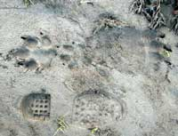
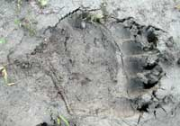
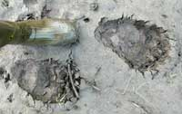
I left the old atlas
bone at that camp, to pick it up on my return trip. Bad enough
carrying bones without meat down stream. Upstream was out of the
question.
Off to the next camp, on a crisp, frosty morning. Trudge, trudge,
trudge through the sunny warm day. Black bear tracks. Wolf tracks.
No moose tracks. And then a noticeable set of fresh grizzly bear
tracks, dwarfing the black bear tracks. Fortunately they were
going down stream, meaning that we had already crossed paths,
amiably. I looked over my shoulder a few times as I trudged on.
Secret Creek is a salmon spawning creek, and the bears know that.
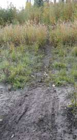
The photos show the
wolf, grizzly and human tracks, the tough 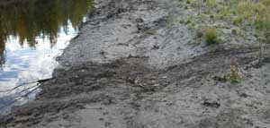
guy
predators in the valley, along with the black bears who attack
humans as often as grizzles do so. Irritable lot around THEIR
food, cubs, dens and other excuses.
The beaver trails from the creek to the willows are more friendly
tracks, but the bears and wolves hang out where the beaver are.
They taste better than spawning salmon.
I visited Larry Dodge's old trapping headquarters camp at its
secret spot along the way, as I do each year. Larry stopped trapping
several years ago. Things were in their ongoing stage of entropy,
slowly sinking into the moss. In the future it will be an archeological
site. The sod roof house was still in reasonable shape. A couple
large spruce trees had fallen down in front of the house. Another
tree had fallen directly over the house, but was wedged above
the roof between two trees. Old moose antlers where being chewed
by squirrels. If anyone sees Larry Dodge of Alaska, rumored to
not be online, tell him to stop by to see Doug Buchanan when he
is in Fairbanks, sose we can tell some stories I have collected
from his previous neighborhood of no neighbors.
My traditional second camp, moose jaw camp, with two moose
jaw bones still laying there from one of these stories a few years
ago, was ready for my arrival, unaltered since my last departure.
The tent, chair and wine routine was effected with the efficiency
of much practice. Well of course I was diligently looking for
moose. I was moose hunting. You never know when you might spot
a moose sneaking up behind you, in the reflection on the wine
glass. I kept my eye on the wine glass, and occasionally leaned
back in the chair to watch the red tailed hawks spiral high above
in the thermals. My friends the wolfs were back in the trees that
night, talking to each other in signal-like short barks. Not sure
what they were saying about me, but some guesses might be accurate.
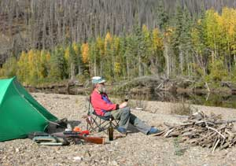
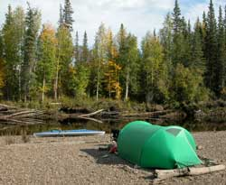
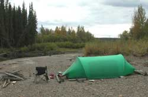
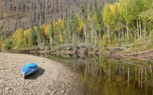
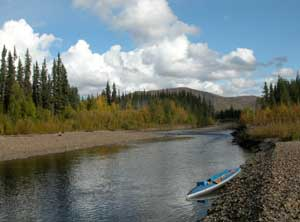
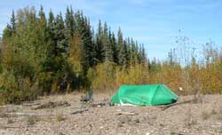
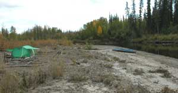
The
morrow was another post card picture perfect day, rather pleasant
for a leisurely creek-side stroll, kayak in tow, for a gentleman
on a hunting adventure. I was not sufficiently patient for a moose
to make tracks to me. I was making tracks to him, if he was upstream
anywhere. Passing one of the permafrost and ice lens cut banks
below an old hummock and black spruce bog, I spotted an odd shape
in a large chunk of ancient moss that tumbled to the creek on
the other side. I waded over, kayak in tow, and pulled a prehistoric
moose antler from the long-compressed and still ice-saturated
thick mat of moss. Just a small base section as usual for old
moose antlers. I put it in the kayak to carry upstream. Well,
maybe it would attract another moose, somehow. One of the cut
bank photos down the page a ways shows the side of an ice lens
back under the dirt and sticks and moss.
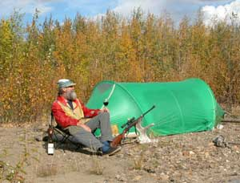
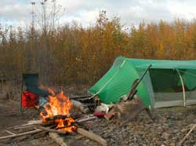
Having
dragged my kayak over too many very shallow areas of rocks, I
decided to stop on the third day at an interesting place I have
previously wanted to camp, short of previous high camps. This
was far enough upstream for such low water conditions. I settled
in, and selected from the kayak wine hold a bottle of luscious
Lamborn Family 02 Zinfandel. From my camp chair I watched a mature
bald eagle land on the top of a nearby spruce tree, in the reflection
of my wine glass.
The next few days were what any well-appointed moose hunting
adventure would want scheduled. No moose. The arrival of a moose
would demarcate the end of the moose hunting adventure. I wandered
upstream and downstream and back through the woods, and sat around
in camp. On an upstream day the annually traditional lone Canadian
goose flew by, looked at me, honked, and continued on, the only
one on this trip. Why each year I encounter one lone Canadian
goose on Secret Creek may be made known to me at some time, or
not.
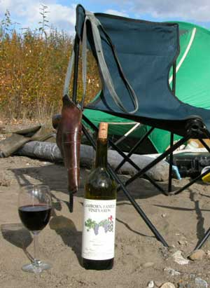
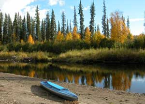
The resident beaver living in the beaver house across the creek
from my tent were most cultured, slapping the water only a couple
times at the start of each evening, as a greeting, without any
further annoyance. There was some slightly noticeable beaver talk
between the two beaver of the house, which is a low muffled staccato
sound comprised of all vowels and produced in one's throat without
opening one's mouth. Sort of like alternating chuckling and crying,
sort of.
In contrast, the louder snuffling of the two otters that passed
by on occasion was more of a nose sound influenced by water. The
quizzical otter found me as entertaining as I found them. We spent
some time visually analyzing each other. I tried to snuffle to
them, but they ignored my effort. The Nine Merganser Show arrived
each day at Show Time. They cavorted back and forth in front of
me, on the creek. They would lower their heads into the water
and scoot forward looking for fish, or just demonstrating their
skills, then raise up and flap their wings to stand on the water.
Three or four of them would occasionally do a whirlwind act in
the middle of the group, causing the others to hastily flutter
out of the way. And in time they would either paddle away upstream
or drift into the fast water below camp and be swept away. At
the times they flew by, they dipped low over the tent, fully aware
that the distinctive sound of nine mergansers flying fast in tight
formation was startling.
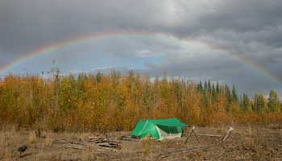
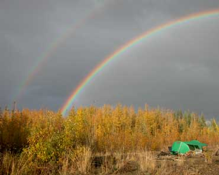
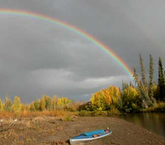
On two occasions a
thunder storm rolled through, one with a sudden deluge of hail
of such magnitude that I was concerned about the strength of my
tent fabric. Hail was bouncing on the ground, like popping popcorn.
It did not last long, and was good entertainment. Spectacular
rainbows appeared, with color depth beyond the refinement of my
camera.
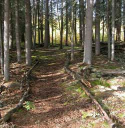
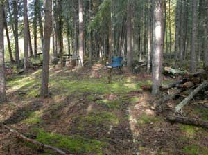
It
was on that upstream day, with my kayak, self limited to only
ten loops to avoid going too far over too many shallow riffles,
I decided to push into a little side slough I had not prior investigated,
on the steep bank side of the creek. They usually go only a few
kayak lengths, and are cluttered with brush. I pushed into this
one, to discover just that. I got out of the kayak, climbed up
the bank, and walked around. The adjacent beaver dam was well
constructed. The pond was surrounded with ideal moose habitat
and dense brush that obscured any chance of seeing a moose. Then
I walked into the tall spruce trees on the high ground next to
the creek.
I laughed. It was an old Larry Dodge out-camp, hidden as usual,
complete with a bed springs cot, good shovel, yukon stove, bush
saw, and an array of old established camp stuff that some might
describe as trash and others might describe as artifacts. But
it is he and I who therefore know where we might go some day if
we want to dig a hole or sleep well along Secret Creek.
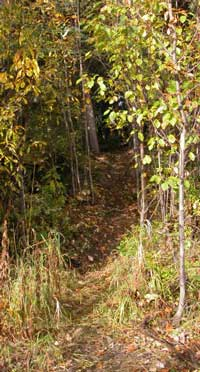
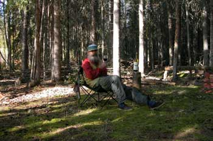
On a day around my camp, I wandered back into the adjacent
tall spruce stand. A moose hunter normally avoids the tall spruce
because the moose feed in the willow, alder, birch and open muskeg
or beaver pond areas, not the spruce. Only moose tracks are in
the spruce, but nobody knows how they get there. I walked into
an old Larry Dodge out-camp, and a nice one. I laughed. Larry
did some nice woodcraft, with wire and twine lashing, etcetera.
It was such a nice place, and I was there a few days, hunting
for moose, that I spiffed it up a bit, as these humans do where
they hang out awhile. To escape the sun out by my tent I often
took my camp chair back into that spruce-shaded, moss carpeted
alcove. There, instead of golden leaves showering down with the
breeze, there was an occasional spruce needle shower, of old needles.
They make a different sound filtering through the branches. The
squirrels there were silent, and went about their business in
the branches above me, occasionally glancing down at me. I may
return, just to sit in that beautiful place, with another glass
of the aforementioned fine Lamborn Family Zinfandel, 02. I recommend
it for such pleasant places.
The photo shows the trail leading through the small birch up
into the spruce stand with the out-camp spot. Easy to find, if
you find the start of the trail.
The old sloughs of uplifted creek meanders randomly winding
back from the creek, variously with and without puddles of water,
ideal moose habitat, offered intriguing moose hunting those few
days. Crossing the occasional dense spruce stands offered glimpses
of boreal gnome trails through the soft green moss. Lacing around
the inner curves of old creek loops were open patios of stunted
birch and gray-green moss struggling to reduce old gravel bars
to useful soil. In the future, suburban landscapers will duplicate
such places for the back yards of the aristocracy, at great effort
but much visual reward. Or let me know and I will do that for
you, at great cost but much visual reward.
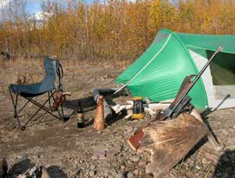
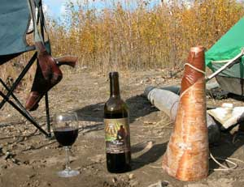
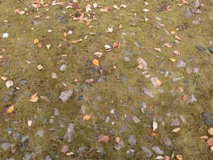
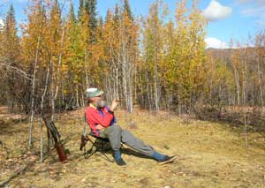
It
was in just such a moss patio that I sat in my camp chair and
enjoyed a fine JR Ultimate Number 1 maduro cigar, while hunting
for moose of course. A cigar will sometimes attract a moose. Not
this time. The breezes brought waves of golden leaves rolling
across the pebbled moss lawn, the one in the photo.
On a downstream walkabout I visited a long-established community
beaver pond in an old creek loop with a sturdy beaver dam. Several
beaver were in residence, and busy. Standing still in the tall
grass next to the water a long time resulted in the beaver going
about their normal activities within a few feet of me, sometimes
looking at me a long time to try to figure out what I was. No
moose there.
From my camp chair I could see four classic woodpecker holes
in old snags. Hawk owls were evening visitors, distinctive on
the tips of spruce trees. A Kingfisher commonly plied the creek.
Large flocks of twitty birds occasionally crossed the creek between
the golden birch trees on each side. Gray jays ascertained the
food potential of my activities. Squirrels chattered throughout
the forest, sounding alarms of nearby threats, or just chattering
to chatter. There were occasionally breaking branches back in
the woods. Large animals were around, and stayed out of sight.
A wolf barked one night. On a walk-about a large goshawk came
around some trees, low, at a fast clip and was as startled by
me as I by her. Being hunters, she wished I was a rabbit, and
I wished she was a bull moose.
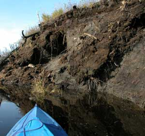
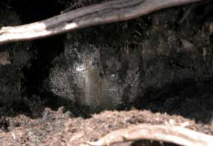
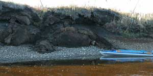
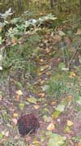
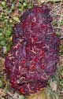
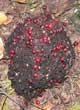
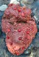
It
was on the narrow, well established bear trails through the spruce,
and through the other trees along the high banks, that the scatberry
displays were most picturesque, quite naturally. Scatberries,
the quintessential symbol of berry season in bear country. If
you are not familiar with scatberries, sometimes gracing beautiful
green moss covered spots with rays of sunlight streaming though
the trees and glistening off the clean round red surfaces of cranberries
sprinkled through bear scat, they are just a visual accent among
the many accents in the northern woods. Watch where you step.
With bears eating berries in volume and haste, many berries survive
the internal adventure intact, to emerge as survivors, not for
those of limited artistic understanding, but not avoidable by
anyone walking along bear trails during berry season. Cranberries
are most noticeable, but the blueberries create a rich purple
color. I have heard some berry eating bear stories before, but
one by a bear hunter back near the road crossing Secret Creek
on the first day of this trip, about a bear that ate so many blueberries
that its meat was purple, was among the more accurate.
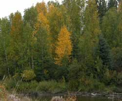
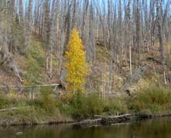
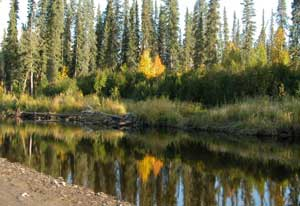
During one of those little passing storms I heard an audible
gust of wind coming down creek. I looked up to see it come around
the corner and grab a couple birch trees, rake off a cloud of
golden leaves and explode them into the air. The leaves swirled
in circles above the creek, then drifted down with the sudden
calm as the wind passed by. The raft of golden leaves in the water
slowly floated past me in the beaver pool creek, glittering in
the sun streaming between the clouds. They spoke of the calm and
pleasantry of the season, then reached the fast water and were
swept downstream, each one racing away from those behind.
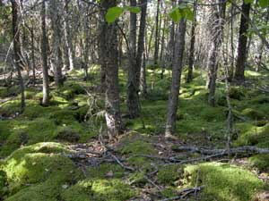
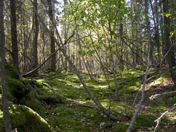
During
these wanderings, amid flawless quiet at those times the birds
were also listening, and my each step was placed in moss to be
as silent, listening for moose of course, I would sometimes get
close to a sudden and startling loud thumping as a hare would
flee unseen through the forest, much to my amusement after the
adrenalin subsided and I clicked the rifle safety back on.
One evening while sitting in front of the campfire, I stood
and offered a toast of fine wine to all the moose in the forest
who had so graciously avoided me to therefore prolong the pleasantry
of the hunt, as well as facilitate all that I was learning.
I watched mayflies or some such things above the creek, in
the sunlight, fly up and down as though on a yo-yo string, drifting
sideways with the breeze. Some would descend to the water and
seemingly bounce back up for more vertical cycles. Some stuck
to the water, and shortly disappeared in the ripple of a feeding
grayling.
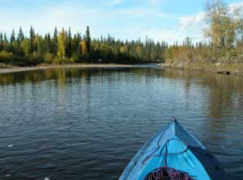
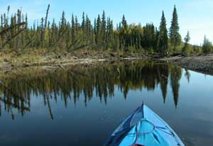
Several of the nights brought spectacular displays of Northern
Lights. I stood in awe outside the tent, looking up, not worried
about any bears sneaking up behind me. They were watching the
show also. These were not just lights in the sky. The sky was
flowing and dancing like a sea of brilliant waves above the stillness
of the earth. Were it not for gravity I would have paddled my
kayak up into them. I will attend to the gravity thing just as
soon as I get around to overthrowing a few repugnant governments,
first that of the US.
Having
leisurely concluded that all was as it should be for this area,
watching some birch trees turn from green to yellow, and having
savored a glass of Horizon's Edge 02 On The Fence cabernet sauvignon
by one of the evening campfires, the morning arrived to get outta
there and go find a moose. I had a particular spot in mind, downstream,
and leisurely set about the journey, bidding my beaver friends
a good winter. It was a short trip, only a couple dozen loops
down creek. I was thankful there was no moose in the kayak each
time I drug it over rocks.
The short float included
my paddling close to one high bank when a rather loud crashing
noise immediately above me in the forest continued with such ferocity
and approaching speed that I was to be seen frantically paddling
with the effects of elevated adrenalin to reach the opposite shore
and stand with my handgun in hand looking back at what was then
silence. Noises happen in the forest, and they can then sneak
away unseen. For big noises, I recommend a large caliber hand
gun. The mere presence of a gun sometimes scares away frightening
noises, as it apparently did in this case. It was later, by chance,
on a walk-about from the nearby camp I made downstream, that I
arrived through the trees at that spot. A large old rotted cottonwood
tree had chosen to fall, toward the creek, in several broken pieces,
through other trees. Big noises happen in the forest.
My new camp, set up before noon after my short trip, was at
a comfortable place, common to my adventures on Secret Creek.
I may camp there again. At this place there were moose tracks,
among the bear and wolf tracks. I was soon in the chair position,
tent up, too early and warm for a campfire, a stemmed crystal
glass of the aforementioned Horizon's Edge wine in hand, and set
about the task of looking
for moose, sometimes glancing upstream, sometimes downstream.
Moose hunting is arduous and not for those who are accustomed
to leisure, but who appreciate it if they stumble upon it.
A walk-about the next day, downstream and upstream, appraised
me of all that was in the area, or what little a human can recognize,
including more moose tracks. A permafrost cut bank revealed no
old fossil bones, despite my search. Immediately behind my tent,
about 80 feet into the willow brush, were some fresh moose beds
and two willow trees freshly scraped by moose antlers. Things
were as they should be, except for the extent of area trampled
by fresh bear tracks.
Enough days had passed to approach the time of the season that
moose begin to notice other moose, and therefore a human can make
the sounds of moose to attract the attention of moose. The humans
are a clever lot. One can scrape various things against the brush
to imitate a bull moose scraping the velvet off his antlers, which
attracts bulls wanting to know just what other bull moose is in
the area, and how big he is. A moose antler works well for this,
and old shed moose antlers can sometimes be found laying around
the area, but they are heavy and awkward to handle, so humans
have a variety of more convenient things they think make the same
sound when scraping willow and other brush or trees. I was amused
to once encounter a person who used a plastic bucket lid, which
to me sounded like a plastic bucket lid scraping brush, but in
face of the story that it always worked for them, either I am
of insufficient auditory acuity, or moose are. The traditional
convenient and light item for making moose antler brush scraping
noise, according to the stories I was told and therefore tell
others, and what I use, is a moose scapula bone. The goal of the
device is to most loudly resonate the sound of a moose antler
with the least inconvenient item that one must carry. I recommend
rasping off the fin and base edges of the scapula, as a refinement
that makes it easily packed and handled.
 Did
I mention a few times why my moose gun kicks so hard? Well, there
being no moose in sight, and the camera was by my chair, so let
me show you. Anyone else puts a padded butt plate on the stern
of a 375 H&H Magnum rifle. I had some Dall sheep horns and
no place to put them except a cardboard box, so I cut one up for
an artistic rifle butt plate. A 375 H&H is the hardest kicking
rifle caliber anyway, and mine kicks harder, to the belated delight
of a sheep I once shot. That is why I am a tough guy, and why
I do not shoot my moose gun very often, which I cannot afford
to do anyway, what with the choice between cartridges or fine
wine. You might notice that I finally put a scope on my 375, so
I have reduced my available excuses for ever missing the target,
like I may have once if you read that story, or twice.
Did
I mention a few times why my moose gun kicks so hard? Well, there
being no moose in sight, and the camera was by my chair, so let
me show you. Anyone else puts a padded butt plate on the stern
of a 375 H&H Magnum rifle. I had some Dall sheep horns and
no place to put them except a cardboard box, so I cut one up for
an artistic rifle butt plate. A 375 H&H is the hardest kicking
rifle caliber anyway, and mine kicks harder, to the belated delight
of a sheep I once shot. That is why I am a tough guy, and why
I do not shoot my moose gun very often, which I cannot afford
to do anyway, what with the choice between cartridges or fine
wine. You might notice that I finally put a scope on my 375, so
I have reduced my available excuses for ever missing the target,
like I may have once if you read that story, or twice.
A moose scraping the brush and trees, like those two large
willows in the photo that was taken just behind my camp, is also
referenced as rattling his antlers. Besides scraping the velvet
of their new antlers, moose rattle their antlers as a challenge
to other moose. The distinctive sound can be heard a ways. While
moose can walk through forest without making a sound, in addition
to rattling his antlers a bull who wants to be heard can noisily
break a lot of branches when plowing his antlers through the trees.
Trees do not appreciate beaver and moose.
Another moose sound is the traditional moose call, the grunting
or "Ugh" sound, higher pitch for females, lower pitch
for males, and with more lung capacity force than any half dozen
humans. A megaphone assists with the latter. Therefore, roll a
section of birch bark into a cone shape, using duct tape to hold
that shape, like the one with brown duct tape, by the tent in
some of the photos, and practice where nobody can hear you because
they will laugh themselves to tears at your making a fool of yourself
trying to make such an odd sound. I would tell you about the person
who suggested a paper towel tube with a half circle piece of paper
over one end, for a moose call, but my typing becomes erratic
when I am laughing so hard. They said it worked for them, indicating
either their competitive intent to leave their listeners less
likely to get a moose, or my ignorance of yet another dumb sounding
idea that actually works, or again the auditory inacuity of moose.
However, if you make moose sounds too early in the season,
you may scare away the smaller bulls with the more tender steaks,
or cause wiser bull moose to walk to other areas to be away from
another moose attracting bears and wolves. As you recognize, a
successful moose hunter must learn extensive moose knowledge,
or invent better sounding guesses when among moose hunting story
tellers.
Long about four in the afternoon I decided to make one series
of female moose calls, on account as there was nobody else in
the valley to laugh at me. Then I started a small campfire, poured
my afternoon half glass of fine wine, sat back in my camp chair,
and watched for moose in the reflection of the wine glass. That
evening I finished another gourmet meal of my prior meticulous
preparation, conveniently just as it started to drizzle a bit.
I retired early, still occasionally glancing upstream and downstream
from my comfortable supine position in my Stephenson tent, looking
out the large side windows.
About 9:30 PM, still light enough to hunt moose but psychologically
marginal, what with the drizzle and the thought of having to butcher
a moose late into the night by headlamp, and a few other lazy
thoughts, a bull moose called from a long ways down creek. And
then from closer. And closer. A bull was coming upstream, looking
for a fight with another bull, or maybe looking for a cow moose.
My tent was in full view right in the way of where he was going
to walk on the comfortable side of the creek. I laid on my side,
watching, and waited, with no intent of letting some moose interrupt
my comfortable evening. I was not getting out of the tent. I could
call him back in the morning if he was looking for other moose.
By now the moose was just around the corner, loudly calling every
few yards and walking with intent.
The first thing I saw in the dim evening light was two big
white banner moose antlers at the dark tree line on the creek
bank, coming my way. He quickly saw my tent, stopped, watched
awhile, called and came forward with full intent to check out
just what this thing was intruding on his path. I was impressed
as he approached. He had at least a sizable 50 inch or more antler
spread, which is a mid range large moose. But then there was the
time
I shot what I thought was a 60 inch spread moose before I did
not need so much measuring device to measure the antlers. But
this one was big, precisely 50 feet away from my tent, on an open
flat gravel bar, standing broadside to me, looking directly at
me though the mosquito net large side window of my tent. After
several minutes he walked over to my kayak at the creek, sniffed
it, fortunately did not step on my paddle there in the photo with
his tracks, turned around, walked back toward the tree line, closer
to me, and stopped again to stare at me for another 5 minutes.
Moose often stand still staring at things, listening, for long
periods of time. I was as silent and still as I could be, cognizant
of the sound of my breathing that I was certain the moose was
hearing with its large moose ears.
It is of course the fondest desire of most moose hunters to
have a large bull moose walk into camp where butchering it is
most convenient, but it was late, and drizzling a bit, and a large
moose would be a heavy kayak load for this low water year, and
I was comfortable and I still had some fine wine I did not want
to float back downstream and, well, you know how such astute reasoning
can facilitate sloth.
The moose walked up to within 33 feet of the tent, leaving
me looking up at him and wondering, then walked past and continued
upstream calling for any bulls who might want to challenge his
dominance. Perhaps he concluded that I and my kayak were just
an inconsequential oddity along his path.
Interestingly the night was also alive with bird chatter. Things
were dynamic. There was a Great Horned Owl trio in full hoot-fest
mode. The deep four hoot series was clearly the main owl of the
area. A higher pitch responding five hoot series alternated with
another six hoot series on the other side of the four hoot guy.
Some gray jays or yet undiscovered species of bird of significant
size were making loud, complex sequences of sounds that bordered
on the sounds made by chupicabras or saber tooth tigers, which
would have caused me some concern if I did not have a round of
375 H&H in the chamber. Even the twitty birds were twittering
that night. Most entertaining.
I was up early, efficiently made hot chocolate, enjoyed a delightful
breakfast which included a few dried cherries the flavor of each
being enhanced by their normally prohibitive cost. I made a small
fire, and stood beside the bush beside my tent. I was going to
call that moose back. I decided to start by rattling my moose
scapula in the brush.
Eighty feet away just inside the willow brush behind my tent
a moose rattled his antlers against one of the well-scraped willow
trees in the photo, beside the fresh moose beds. I was amused.
He had been there while I was dinking around with the camp fire
and enjoying my morning hot chocolate.
I rattled the brush again, clicked off the safety and prepared
to shoot a large bull moose emerging 40 feet away at the brush
line.
Some time later I concluded that the bull moose was not interested
in the oddity of his prior knowledge, and after announcing himself
for the morning, had merely wandered away to go browse for the
day, perhaps in the areas of the photos.
Therefore it was a nice day for some walk-abouts, and some
sit-abouts. I did not find any fossil bones despite my casual
search during the day. And I took some photos of areas beyond
the creek sides, to clutter this page and inform the viewer of
what one can be walking through in an interior Alaska creek valley,
in the more walkable areas.
That evening I enjoyed the last glass of the Horizon's Edge,
paired well with a light Thai curry rice and vegetable arrangement.
Interestingly,
that night was flawlessly silent. There was not even one bird
chirp.
I was up early, efficiently made hot chocolate, enjoyed a delightful
breakfast which included a few dried cherries the flavor of each
being enhanced by their normally prohibitive cost. I made a small
fire, rattled the willow beside my tent, and sat in my camp chair
next to the fire.
After awhile, across the creek, back in the woods a ways, a
bull rattled his antlers, and then rattled them again, closer.
I patiently waited. The moose was not in a hurry. Then the branch
breaking started as the bull ambled toward the creek. I of course
continued comfortably sitting in my camp chair at 8: AM, that
being the logical reaction for a gentleman hunter.
A nice young bull, not the large one of the other evening,
much to my good fortune, emerged at the creek bank, turned broadside
to walk to an easier place to cross, and I shot it from my camp
chair, there in the photo somewhere below the clutter of these
other photos. Did I mention that I flunked web slave school, but
they kept me chained to the computer anyway?
Second
only to a moose in camp, is a shot from one's camp chair.
I paddled my kayak across the creek to the high bank, positioned
my kayak on a grass step that was a remnant of an old slough exit
at that spot, and began the day's effort to butcher the moose.
It was a cozy spot at the edge of the high creek bank about 5
feet above the water, in grass, surrounded by variously dense
willow, alder, birch and spruce. An old slough pond was a few
feet away, leading back among the trees, with a picturesque fallen
log angled across it.
Did I mention no few hundred times that a person in Alaska
and such places, especially if alone, always keeps their 44 magnum
in their shoulder holster, on them, because if they walk to the
creek to get water, or such things, the bear will emerge between
them and their camp, no matter how short that distance.
I
hung my 44 holster on the branch directly above the moose where
I was working, even more convenient than on me.
After opening the carcass and pulling and pushing the large
mass of guts out to an adjacent pile, therefore ready to start
sectioning the meat, I walked to the nearby pond to wash my hands.
Kneeling there in the tall sedge grass, my mind casually recognized
that I had just heard somebody exhale, while I was inhaling. I
was amused, looking up to look into the face of a black bear looking
at me.
I
looked over at my gun hanging in the tree. I laughed. The bear
was quizzical.
I casually walked over and got my gun. The bear missed its
chance.
And the bear adventure began.
I had a moose to attend to, a moose that the bear decided it
would like to attend to. While I eat bear meat also, I had as
many reasons, albeit different reasons, to not shoot the bear,
as I had to not shoot the large moose in camp the other evening.
I had a moose to attend to, which would be enough weight for the
kayak that I would already be struggling miserably to get back
over many rock areas. During the last several days of wonderful
weather, the creek had dropped a bit, making the shallow rocky
areas shallower. But the bear expressed serious interest in acquiring
MY moose.
So
we started our discussion about MY moose, sometimes animated.
We generally remained about 20 from each other. I explained to
the bear that I eat bear meat. The bear indicated that it was
partial to moose but would not pass up a convenient human in the
bear's dining room. During our discourse I would lunge at the
bear and issue forth loud verbosities regarding my position in
the matter. The bear would jump back at each such lunge, and usually
therefore slink down in the brush and grass, disappearing from
sight even at that close distance, sneaking around in an arc between
the upstream bank and the downstream bank, trying to figure out
its best position for further discussion, and learn what it could
of my intentions. Sometimes the bear would approach a few steps
closer in a somewhat open spot half way around the arc, where
I would therefore lunge at it and offer innovative comments, loudly.
Usually the bear went to the more open creek bank that did not
have as many sticks in the way, but had high grass and willow
to hide behind so the bear could sneak a bit closer to me before
it was in full face view. I would lunge at it, mention my preference
for its patience, and attend to cutting up the moose while the
bear was silently sneaking around again. Each time it crossed
the slough on the upstream side, the bear carefully walked across
the fallen log. It did not want to get its feet wet, quite naturally.
It routinely sniffed the air, trying to locate the exact spot
of the gourmet moose banquet somewhere so close to it. A few times
the bear stood up at a spot it was in full view, and noticeably
walked straight away from me into the forest. The first time I
thought the bear had therefore concurred with my position in the
matter. Next thing I noticed when looking up from my moose cutting
task was a bear face on the close side of the bank willows. Each
time I lunged at the bear, I was training it to recognize that
I was only bluffing. I did not want to chase a bear a long ways
back into the woods because it might beat me back to MY moose.
The bear began taking another disconcerting step closer to me
after my latter attempts to scare it away. Throughout the adventure,
the bear was flawlessly silent, except for that first noticeable
exhale. It did not even break a twig.
Our discussion lasted
about 45 minutes. One particular moment came very close to my
ending the conversation, but the bear stopped in time. A second
time I concluded that I would have to shoot the bear so I could
get the moose butchered, and would just have to butcher a bear
also. It might have berry-fed purple meat, which sounds good to
me. But I belatedly recognized a possible solution. The bear was
upstream at the bank. I politely suggested that it go back downstream
one more time, and pointed several times. Not particularly convinced
of my suggestion, and about 15 feet away this time, I picked up
a short beaver-cut stick and threw it at the bear with a full
face impact. That was a new development for the bear, who decided
to accept my rudely emphasized suggestion that it should go try
the downstream position again.
About the time it was approaching the downstream bank again,
I pushed the moose gut pile into the creek, and pushed it downstream
with my kayak paddle. The creek current was barely moving in that
area. The bear emerged at the creek bank, looking at me as usual,
and slowly came toward me, crouching in the long grass. At its
usual close point it noticed something large slowly moving past
it, down in the creek. The bear sniffed and recognized the source
of its interest. Looking back at me one more time, it slowly tried
to get to the floating gut pile without getting down in the creek.
Climbing down on some brush and a log at the edge of the water,
the bear had to get into the water, but promptly drug the guts
into the creek-bank brush a few feet farther away from MY moose
and I.
In the photo, I shot the moose from the chair. The yellow spot
is where the moose dropped. The red spots are the upstream and
downstream positions of the bear when it was at the creek bank.
And therefore all was as it should be. The bear was dragging
portions of the guts up into the grass and willows, enjoying its
easily earned banquet, and I was a few feet away, out of sight
behind the tall grass and willows, butchering the moose for the
rest of the day until I was done at 4:30 PM. Yes, I looked up
on occasion, and was wearing my 44.
The kayak therefore loaded with sacks of meat, I angled it
downstream and paddled back across the creek, to my camp.
But now therefore I was close and in full view of THE BEAR'S
remaining food pile in the creek, and the bear on the bank. The
bear did not mind me a few feet away out of sight behind high
grass and willow on its side of the creek, but in full view near
THE BEAR'S food pile, I was now disconcerting to the bear.
Further, now I noticed her triplet of cubs. Perhaps that was
why all the critters were so silent the previous night.
I considered it prudent to break camp and move downstream a
ways for the evening. We all watched each other with close interest.
They did not mind me up away from the water taking down my tent
and packing things up. They were more attentive but did not mind
me carrying things down to the shore beside my kayak in the water.
But when I started loading my kayak, I was wading in the water,
close, and not moving away. The bear's concern was visible.
The bear walked to an adjacent convenient crossing place a
few feet downstream, and stood at a log extending from the bank.
I kept efficiently loading the kayak. No haste was in order because
I had a heavy load that had to be loaded properly for precarious
water that was not always shallow or slow. The bear became impatient.
When she finally walked out the short log and was about to step
into the water to come over and escort me away from HER food,
and perhaps add me to the pile, she hesitated when I loudly pontificated
on the unwise nature of such a decision. But only hesitated. I
was about to conclude that my earlier efforts would be for naught
as I clicked the safety off my rifle and stepped forward to meet
her in the water where I might more impress her with my tough
guy attitude. In doing so I picked up a sizable rock at water's
edge and threw it the moment she put her leading paw into the
water. The splash in her face caused her to step back, but only
long enough for me to pick up another rock and throw it when she
stepped forward again. The same reaction suggested the futility
of my current plan, so the third time I threw a heavy rock behind
her, thumping on the bank.
That got her attention. She wheeled and was up on the bank
again looking for the unseen threat behind her. While she remained
perplexed and cautious, I continued loading the kayak. That is
how the stand-off continued until I was finished, with a bit less
of my normal final fine touches, before pushing the kayak out
into the water, closer to the bears, and pulled it downstream
past the bears who stood with greater attention until it became
clear that I was moving away. They would shortly discover the
additional pickings around the bone pile, especially the thick
slices of fat.
What? Photos of the
bears? None. Get a post card picture. I was doing what needed
to be efficiently done, without delays or distractions. I did
not even eat lunch. Next time there may be a photo person along.
Photo people think of photos first. I usually think of them after
the opportunity is gone, which saves film, or pixels.
Yes, I looked over my shoulder several times while paddling
the moose-laden kayak past the next few steep banks beside the
forest where big noises can suddenly attack.
Oh, the story the bear told?..... I can't believe the extent
of my patience, understanding and careful conjoling to get that
ignorant human to share a bit of the food while he was butchering
my moose. I had to act like I was impressed with his pitifully
laughable bluffs, which I would not have done if I had not sent
the kids out of sight so they would not see me. Embarrassing.
I should have just swatted him into the creek before he got his
gun. I had been sitting there watching him 15 minutes before I
introduced myself. He was doing a good job, but slow. Then when
he got right out in full sight of the kids, they started asking
why I didn't run him away. What's a mother to do when she has
to train the kids how to be adult bears in the woods? He is alive
today because he was wise enough to not take pictures, so he can't
prove a word of his tough guy story he is probably telling other
humans.
Back to moose jaw camp late in the evening, and a campfire
from wood already conveniently stacked for just such contingencies,
the tent set up, sitting in my camp chair with a glass of Magito
Zinfandel whose rich mouth-watering flavor tasted even richer,
for some reason. The campfire was warmer. The chair more comfortable,
and the night sky was smiling with stars. I taried late and enjoyed
every minute. That night the resident wolves barked back and forth
on either side of my camp, discussing whatever wolves at moose
jaw camp discuss at night. I think that may be their denning area
or most comfortable home turf in the valley.
On the morrow it was a long way out, with many sweat-inducing
struggles, digging several trenches in the rocks to push the kayak
through. In the shallow pebble areas, after digging a trench I
would push from behind until it was hopeless, then pull from the
front until it was hopeless, then dig again, and so forth until
hopelessness was overcome yet again, as usual. At one place I
had to move large boulders for almost an hour, and then struggle.
The creek had noticeably dropped. There is a reason the kayak
is not moving in the loaded kayak photos. It is sitting on rocks,
and I only have a still camera. I was repeatedly appreciative
of my good luck for having not shot the larger moose or the bear.
The kayak, lower in the water, but stacked higher, squeezed under
the large spruce tree laying across the creek, quite fortunately.
The fossil bison
bone at first camp added to the weight, but a glass from the remaining
Magito complemented lunch to lighten the load and enlighten the
trip.
That is the photo of the atlas vertebra bone, the top vertebra
against the skull, probably bison. So far all four of the fossil
moose antler bases I have found were from moose with small antlers,
like the one in the photo.
Then the toilsome meat cutting process started.
Hunting is the reason that hunting and gathering has given
way to ranching and farming. My friend Richard often tells me
that he is successful every time he hunts the grocery store, with
little effort, and he gets airline miles on his credit card. I
gotta figure out that credit card thing.
Alaska Scotch and Cigar Society (Fairbanks)...
At the Autumn 2007
meeting of the Alaska Scotch and Cigar Society (Fairbanks), it
was suggested and resolved by the colleagues present that greater
public knowledge of said society would advance the human understanding
of beneficial social processes, or something like that.
The Society colleagues generally prefer Single Malt Islay Scotch,
but prejudice no fine Scotch or any concept terrestrial or extra
terrestrial, some of the latter occasionally enjoyed.
It has been known by wise and other common-sense people throughout
history that among the countless categories or rhetorical groupings
of humans two such identify the first demarcation of humans. The
prevailing of the two, albeit only over the long test of time,
is that group whose participants predicate their interactions
on reasoning, that is, the asking and answering of questions among
themselves, to advance their knowledge and therefore derive effects
equally beneficial to all humans. Humans are predicated on the
use of reasoning and advancing knowledge, otherwise stated, their
mind.
Therein, no expressions of colleagues or others can possibly
offend or insult any among them because the quest of each mind
is to identify and understand the reasoning that effected any
conclusion expressed by any words invented for any purpose. Human
society advances on expressed and understood reasoning, not any
one person's or group's bare conclusions.
Therein, scotch and
cigars are known to facilitate and sustain good fellowship among
all persons, some of whom might even suggest that certain among
them, or others, are idiots, for reasoning that would therefore
be of interest and utility if the reasoning could be sustained
against questions effected by genuine curiosity for reasoning.
With reasoning, all contradictions can be efficiently resolved.
Even idiots, when wise, can use the reasoning of their therein
verified condition, to promptly correct it, to therefore no longer
be idiots, quite obviously, and further be recognized as wise
for having accurately questioned the reasoning to ascertain its
validity or lack of validity, rather than merely be offended,
and another sip of fine Islay Scotch can therefore be more thoroughly
enjoyed.
Concurrently both scotch and cigars are known poisons which
are deleterious to the human body. Therefore, profound moderation
is openly recognized, inherent to all things, just as it is for
the greatest poisons known to human minds, those being flattery,
serious rather than satirical expressions of respect, titles,
credentials and other rhetorical illusions of institutional power
or superiority. Power corrupts, that is, damages the process and
perceptions of the mind. Power is the opposite of reasoning, and
not useful to the human mind, especially one enjoying fine Scotch
and cigars.
The second of the two groups first demarcating the human phenomenon
is that of the power-damaged minds, the fine chaps, pitiable lot
that they are, whose minds hastily arrive at conclusions from
poorly questioned or unquestioned prior conclusions of their ilk,
often claiming high institutional titles as substitutes for reasoning,
and then seek to impose the routinely damaging effects of those
routinely contradicted conclusions on others, by use of raw police
or military force, directly or through intermediaries such as
lawyers, court judges, bureaucrats or other representatives of
their ilk in power-based governments. They are easily identified
by their incessant evasion of answering questions, or answering
with laughably unrelated arrangements of words not carrying their
meanings, because those folks never prior questioned their own
hasty conclusions taught to them by equally unquestioning sorts.
Nobody taught them the beneficial attributes of fine Scotch and
cigars.
The Alaska Scotch
and Cigar Society (Fairbanks) tends to meet in small but elegant
log cabins on hills looking across the flats to the magnificent
Alaska Range, but other locations including those looking across
to planet Earth are not prejudiced. A few Society members consented
to pose for the photos, to verify the meeting and give perspective
to the cabin. The secretary was photographed at his task of accurately
recording the Scotch and cigar tasting notes.
As common to the meetings, discussions ranged from mid 1800's
surgery tools and technology, to all other concepts of the universe,
some of them found out beyond the current intellectual dark ages
in which humans are yet mired, and will effect an exponential
advancement of the human phenomenon upon their recognition by
currently less reasoning folks who do not enjoy fine Islay Scotch
and cigars.
There being a finite selection of Islay Scotch, with a few
more rare, select cask bottlings among them, while always reviewing
the luscious peaty flavors therein, Society colleagues also evaluate
such diverse libations as the Kentucky Peach moonshine that may
have arrived at the Autumn 2007 meeting.
As those of our and your astute nature do not live by smoke
and peaty Scotch alone, Society colleagues routinely arrive at
meetings with such complementary nutrition as found at the recent
meeting: Smoked moose tongue, moose backstrap and mountain goat
tenderloin fondue, some sort of reasonably spiced sausage, six
succulent cheeses, four breads and crackers, three chocolates,
hulva and walnuts. The backstrap and tenderloin pieces were marinated
in a well proportioned array of olive oil, red wine, crushed garlic,
dijon mustard and herbs de provant, cooked on a fondue fork to
an extent desired, in hot peanut oil.
Rumored libations of the recent meeting included Lagavulin
16, Lagavulin Double Matured, Laphroig 15, Bunnahabhain 18, Caol
Ila 12, Aberlour 16, Bruichlanddich Signatory Vintage 1968, Glennmorange
Burgundy Wood, Glennmorange Sherry Wood, Glennmorange Port Wood,
Macallan 12, Kentucky Moonshine Peach, Kentucky Moonshine Green
Apple, and of course, Gamel Dansk.
Gamel Dansk, the national
drink and breakfast elixir of the fine Danish culture, traditionally
opens the meetings of the Society. Spare no effort to acquire
a bottle for your most respected guests, all emergencies and any
illnesses or injuries.
A toast of Gamel Dansk was made to Alaska Scotch and Cigar
Society (Juneau) colleagues, certain of their current endeavors
to advance society, the cabin and the good sail boat Mischief,
for future collaborative meetings, explorations and adventures
of Society colleagues. Juneau, being Alaska's capital and therefore
clogged with politicians and bureaucrats, we remind our Juneau
colleagues to get their annual immunization shots for the flu
and government viruses.
While all the fine Scotches offer specific flavors worthy and
to be graciously evaluated in their own right, the Society considers
Lagavulin 16 to be the gold standard of Islay Scotch, as a result
of the magnitude of its peat flavor.
Laphroig 17, and no lesser age, can be equated to the gold
standard, and even smoother in certain parallel concepts of the
palate, but its name is impaired by the more common lesser ages
of noticeably less substance in flavor, but they are certainly
Islay and therefore preferred despite the magnificent nature of
many highland and lowland single malt Scotches which are recommended
for comparative analysis.
The sole purpose of the American bourbon industry is to provide
oak barrels for the maturation of Scotch.
The progress of Society meetings involves the carefully considered
analysis of the flavors of each Scotch, as interludes to long
dissertations and discussions of a grand diversity of topics whose
conversational origin is rarely identified and less often remembered.
The Bunnahabhain 18 offered a butterscotchy peat jumpstart with
a fleeting mist of iodine evaporating into a thin slathering of
honey over mellowed oak, a trace of age-burnished leather, and
some lingering pleasantry for which a committee was assigned the
task to invent a new word. However, that was not unanimous.
The evening fare being what it was, the hunting stories were
endured, questioned and cheered. The mountain goat on the ridge
above the glacier was no small endeavor, with results we savored.
There was some stand up animation for the account of the bear's
interest in the moose acquired by one of the colleagues present.
Such matters brought forward the question of the fossil bison
vertebras among the colleagues. Atlas or axis? The cabin specimen
was introduced, a fine example superior in condition and size
to the one acquired during the trip with the bear story. It was
the reasoning of the doctors versus the reasoning of the wildlife
biologist, each of whom had forgotten the answer to that question
on the skeletal anatomy test. It was therefore decreed that each
specimen was an atlas, unless you notice a change in that conclusion
after the writer gets around to checking bone pictures on the
internet.
In regard to cigars, JR Ultimate Number 1's are difficult to
trump, but the search is ongoing and savored at each meeting.
Open the windows a bit more.
That being a cursory review of the recent and typical meetings,
certainly not including the long discussions of great and weighty
matters of serious consequence, to include modern surgery techniques,
the Society relegated the full agenda list of world-changing projects
to committees which will meet in secret and report to the Society
at the appropriate time. The reports will be uploaded unless their
effects are otherwise first made obvious by a certain induced
collapse of all corrupted governments (all governments), or a
noticeable decrease in the cost of noticeably finer Scotch and
cigars.
The 07
Big Bottle Party.....
A small percentage
of artists and other sorts understand that quantity, quality and
size can be arranged in such proportions as to effect a desirable
result. Some artists are well known because they simply did what
they do, in very large format. However, a critical threshold of
quality must be present or the large size would fail.
Within the current American wine fad there is no end of parties
and such social gatherings based on wine. If there were a whizgadget
fad, there would be a lot of whizgadget parties. Of all the wine
parties, of all arrangements of wine, the Big Bottle parties are
most memorable, primarily because wine impairs the memory of details,
such as which wines of the blurred selection were of what nature,
or which wine party of the last several it was anyway. But with
only one wine to remember, in a visually commanding bottle, the
party is remembered, and the subsequent rhetoric is easily invented.
You can tell almost any story, and the other people at the party
will think they missed that part of the party over on the other
side of the room, but they will remember the bottle, nod their
head and add their story.
So it was that the current caretakers of the prestigious Alaskan
Alpine Club headquarters hosted the Club's first Big Bottle Party,
sometime in October 07, if memory serves the web slave adequately.
Well, it was a big bottle, with a lot of wine.
It was a 1999 Seth Ryan Cabernet Sauvignon (Red Mountain
appellation, Washington). 18 liter bottle, that is, 2 cases
of wine in one bottle.
And it was magnificent.
The resident cork aroma experts declared that the bottle was
good, which effected the requirement that all who brought contingency
bottles of wine must take them back home, because this was a Big
Bottle party, not some mere plebeian regular size bottle party.
In fact it was so good that it was decided that you should
wait awhile before buying any Seth Ryan wine, until those at the
party can get some before the wine gets so popular that the price
goes up.
The photo shows the pulling of the cork. It was staged, after
the other photos of the other three attempts to pull the cork,
with three people holding the bottle. The uncorking of a Big Bottle
is sometimes a bit of an effort. We came close to unlimbering
the 44 magnum.
The subsequent official first taste effected the official declaration
that the wine was of admirable quality, about the same time others
were already enjoying it. No respect for official wine decorum.
At 18 liters, the presiding officer of the party should require
the person pouring the wine to be licensed for the responsibility.
We concluded this after several of us spilled a few drops on our
first pour. With that qualification, any of us will issue a license
to anyone who invites any of us to a big bottle party, of any
bottle size. Big Bottle party consulting is also available for
the same consideration.
Signing the bottle is part of the gig. Get one of those silver
paint pens, but not one like ours, that leaked.
Big Bottles of previous Big Bottle parties were displayed.
The previous largest Big Bottle was a 9 liter Salmanazar size
bottle. A 12-15 liter size bottle is named a Nebacaneezer bottle.
An 18 liter bottle is called an 18 liter bottle, or, you can name
it whatever you want, and after half of it is gone, everyone will
believe you.
It was
19 October, warm and snowing for this year's event. We had good
music when the guy with the guitar played. Some of the folks posed for a
group photo. Others just laughed. One guy had just showed up in
Alaska for the first time that day. There were mountain climbing
stories told. One person was overheard indicating that he would
go climbing with somebody who wants to go climbing. Yeah, we have
heard that before. The hardest part of every climb is getting
out of town. A previous employee of Rock and Ice magazine was
present, and was therefore shown the prestigious Alaskan Alpine
Club library selection of Rock and Ice magazines, which was just
recently taken out of cardboard boxes. It is a motly selection,
but includes Rock and Ice number 1. The conversations were of
such Alaskan nature that the Homeland Security Gestapo will be
analyzing their copies of the tapes for weeks, trying to figure
out what was being referenced with those odd arrangements of words.
The Alaska independence process was delayed by this endeavor,
yet again, but it is still in progress. Free trade agreements
are being negotiated with all wine producing nations, including
those western US States which will be departing the Washington
DC war regime about the same time.
And there we jolly well have it for that one.
Merry Christmas again, Merry Christmas 2007 already......
And Happy New Year
again.
This is the annual year-end update form letter to family, friends
and the world.
40 degrees below zero outside as I write this in Fairbanks.
Nice. No mosquitoes.
The photo shows my lighted Christmas tree. Notice the similar
trees to the left of it, under the big trees. Well, many people
throw away their artificial Christmas trees here in Fairbanks.
Therefore a horticulturally inclined person such as myself can
easily collect a few at the dumpsters, and plant a small artificial
forest, such as this visual buffer beside my parking area. One
of them had lights on it. They were so well attached that I left
them on. Then nearing Christmas time I ran an extension cord over
there, and plugged in the tree. It does not get any easier. You
cannot find any local spruce with that many branches.
The year has been as it has at AlaskaStories.com, AlaskanAlpineClub.org,
BarbecueNight.com, ProjectNight.com, BuchananLake.com and a few
others.
Betty's Island at BuchananLake.com was the horticultural floating
island engineering adventure of the year. Well, how was I to know
that it would get hot in Yakima Washington in the summer, and
therefore dry the soil enough to lighten the island enough to
raise the bottom of the soil above the water to therefore really
dry the soil to leave the seedling trees less than adequately
watered after I already ran away to Alaska so the concrete weights
did not get put on the island to keep the bottom of the soil in
the water so the trees would survive? You just can't find good
floating island horticultural engineers who stay with their islands
these days. The floating island game allows much to improve.
More
trees will be planted in the spring of 08. And more weight will
be put on the island, to keep the bottom of the soil in the water.
Sure hope it is not too much weight followed by a winter of too
much snow to weight the island so much the top of the soil goes
below the water. The top of the soil is the top of the island.
Good thing for the interest of this year-end form letter that
a few of us did an iChat video wine tasting between Fairbanks
and Juneau Alaska.
You iChat video experienced folks may be amused, but those
of us who have just discovered this game are still at the stage
of taking pictures of the iChat screen image, to show them to
people, just because it is a new experience. The lower corner
picture was our end of the adventure. To get rid of the flash
reflection, I moves to one side, and discovered how dirty my computer
screen was.
We enjoyed an 02 Lamborn Family zinfandel and an 03 Donedei
cabernet sauvignon, each highly suitable for an end of the year
inter-city iChat video wine tasting in the far frozen north. I
recommend them. And bring one when you drop by any time.
Then
Christmas day arrived, with a superlative wine glass from the
cool Goose
Bay glass blowers at Townsend Montana, of all places. How
can Townsend Montana, without an ocean or even a lake, have a
bay? Well the Missouri River there next to town has a bay and
a goose, and some glass blowers having fun. If you squint your
eyes or drink fine wine you can see the river, the bay, the goose
and some fishermen sitting around telling fish stories, in the
glass. You can even see the fish, some bay weed and a few rhetorical
illusions.
What you will not see on this web page is a picture of the
web slave in his new Afghan freedom fighter's hat and Bolivian
revolution alpaca sweater made by certain revolutionary colleagues
fighting the ongoing battles against the inherently power-corrupted
mental midgets who stumble into government power, as usual. My
benevolent friends in the excessively funded US Homeland Security
Gestapo are collecting such vast volumes of information on the
laughably intimidated but government-feared American proletariat
that said pictures, if uploaded, would just cost you more tax
money to put them in the web slave's classified dossiers that
were already a few inches thick back in the 80's, verified in
the files of most western state National Parks where the stinkin
Park Pigs fear mountain climbers and all free thinkers not kowtowing
to Kremlin mentality dolts in the US government.
Oh, one of the Ho Ho Ho Merry Christmas parties was among certain
locals who discussed so many explosives, firearms and cannons,
and their uses, that they would be considered patriots in the
context of their US Revolutionary War history conversation, but
be immediately renditioned to Egypt by idiot George Bush and his
intellectually absent US police/military drones, for torture,
as suspected terrorists, just for discussing US history.
May your new year be made more prosperous by the timely self-collapse
of the DemocanRepublicrat Regime.
2008 Chitina Dipnetting....
Desperate? Desperate? Well, I pulled another Chitina Red out
of the freezer, and carefully duct-taped the door close again,
for the BBQnight.com grill, as usual. And I got to thinking a
bit....
A few days ago I got the 2008 moose meander story done, on
the next page, but a cursory review indicated that I had not yet
got around to the 2008 Chitina dipnetting story. Well, what with
the list of things to do lost in the piles of the lists of things,
I was not surprised, but I recognized the desperate nature of
the contradiction. Well, nobody else is seriously interested in
overthrowing the government (any government), promptly manifesting
Alaska independence, making government inescapably honest, a non-devaluable
currency, world peace or any other easily achieved goals that
still confuse those who simply stop asking and answering questions
of contradictions too soon, and what with there being so few times
I escape all the more interesting projects, such as bringing the
AlaskanAlpineClub.org HQ up to HQ standards, I figured I better
put another mug of water in the microwave for some more Earl Grey
tea, and start hitting the computer keys on this word-smithing
project, then get back to the dragon headed and footed Alaska
oil pipeline end cap elevated back yard fire pit for the HQ, of
course, as shown on an October 2008 ProjectNight.com.
It was some time this summer, 2008, that the usual Chitina
dipnetting rumors began drifting upstream and across the Alaska
Range to Fairbanks. "The Reds are running. The Reds are running."
"Oh man, I gotta ........ (fill in 37 of the most common
excuses). Maybe they will be running again next week."
Who could go, when, with what sort of transportation when they
got there, laced with the aforementioned delay-excuses and speculation
on the next salmon runs, became the local summer conversation
as usual.
Common person dipnetting for salmon in the Copper River canyon
is one of the last vestiges of governmentally tolerated, socially
productive real-human life left in Alaska. It is HATED
by the sinking insatiably greedy Alaska DemocanRepublicrat government
regime because there is no monetary exchange to tax. Common people
are directly and efficiently getting good food from the natural
environment. It is HATED by the stinking commercial salmon
fishermen and their highly paid lobbyists because they cannot
catch those fish and sell them back to the people for corporate
profits (taxed by the sinking DemocanRepublicrats). It is HATED
by the Alaska Native (race-based) Corporations with their stinking
lawyers and lobbyists because they routinely pander the illusion
that only their exclusive race of people can be allowed to derive
food from the natural environment, not those inferior other humans
without "native" colored skin. Even the ever-stinking
environmentalists actively lobby against Chitina dipnetting because
they cannot tolerate non-environmentalist humans being allowed
out in the "wilderness". Anyone else would have to pay
the production costs for a show of greedy malicious idiots like
that. We common Alaskan folks get to watch, ridicule, and laugh
at it for free.
So the aforementioned repugnant sorts annually do what they
can to disadvantage Chitina dipnetting, without creating a shooting
war. They do not recognize how close they are getting, inherent
to insatiably greedy dolts. The French Government Aristocracy
did the same thing a couple hundred years ago, until the inherent
results.
This year the marginal road along the canyon was not maintained
by the grossly over-funded Alaska Department of Transportation
(DOT) which was too busy manicuring the roads to the homes, wilderness
cabins and resorts of the Alaska legislators, the incessantly
lying governor and DOT insiders. Further, the bridge across the
first creek at the Copper River canyon was purposely narrowed
so cars could not cross it, allowing only those who can afford
all terrain vehicles (ATV's), and afford to haul them to Chitina.
The road therefore deteriorated to nearly impassable for even
ATV's. Or better stated, it became more highly entertaining as
one carefully passed by the wash-outs, equally careful to not
look down at the roiling river far below.
"Hey, where's Bob? I can go dipnetting tomorrow."
"Oh, he left with Ken last night. Ken had to be back by tomorrow."
"We are still going dipnetting Tuesday, right?" "Oh
man, I gotta move the outhouse, or Nancy will divorce me. Maybe
next week."
"Okay, I borrowed a trailer for the dipnetting trip tomorrow."
"Ah, I just looked at the four wheeler for the first time
this year. Big pool of oil under it. I forgot about the cracked
oil pan and broken clutch."
However, a combination of increased solar sun spot activity,
a canceled gold exploration project and a certain person's demand
for food resulted in two of us suddenly driving out of town with
a borrowed ATV in the back of a pickup. Being a bit hastily planned,
we promptly stopped at a local grocery store to get some food.
In the parking lot we encountered two mountain climbing colleagues
who were on the same adventure, with their bicycles for on-site
transport of the fish, if we caught any. Sometimes you can dipnet
for days, and catch no fish.
We therefore planned to rally at the traditional dipnetting
parking area, to combine our great skills, our mutual hope for
luck, and the advantage of the ATV for hauling fish, along with
our modest stores of fine scotch, wine, cigars and such stuff.
Upon secret consultation we concluded that our preferred secret
dipnetting spots in the canyon were either the same spot or close,
or adjustable to facilitate our plan.
We departed Fairbanks. It is a long drive to Chitina, offering
time for all the stories we already told each other, and the same
old plans to climb every mountain and cliff we saw along the way.
Of course while driving through downtown Chitina toward the turnoff
for the dipnetting canyon to hell, the story of Chuck Comstock
climbing the adjacent cliff above the city park lake, naked, during
the Chitina Bluegrass Music Festival, was recounted with a modicum
of embellishments that may eventually qualify Chuck for Irish
Sainthood.
Just reaching the traditional parking area involved some very
slow driving past perilous precipices. The road had genuinely
deteriorated with lack of maintenance. More folks than usual gave
up sooner, and were fishing down in less-productive spots, short
of the traditional parking area.
The sunspots still aligned, we encountered the two climbing
colleagues at the traditional parking area, and were shortly off
along the cliff road. Two of us were on the ATV with our and their
nets, and they on their bikes with their packs. We would return
for the coolers of ice for the fish.
It was noticeably more desperate this year. Some washouts had
been filled by logs, sticks and rocks that dipnetters dragged
into position by hand, to get across, while the worthless Alaska
Governor Palin and her rich cronies in DOT were getting free salmon
from their rich commercial fishermen lobbyists. We laughed, leaned
to one side on the ATV to keep the weight on the inside wheels,
and gunned the throttle to minimize the total time we were scared
spitless and afraid to look down.
Noticed some curious ATV parts down a ways in one gully, but
the bones next to them looked old, so we kept going.
There was an obvious increase in bicycles with all manner of
fish-hauling containers strapped to them this year. No few bicycle
baby trailers had been modified to haul salmon. Well, the babies
won't notice the different smell, maybe. All sorts of hand carts
were being pulled, including a big 2x4 frame scrap lumber thing
that would haul a moose. Heartier people with back packs trudged
along the road this year. It was the distinct image of the Ho
Chi Min Trail, with salmon instead of mortar rounds. There were
many conversations with the sort of folks you always like to meet.
We were cognizant of our good fortune having an ATV, among several
others along the road. The road is long, and salmon are heavy.
Short of our secret, highly productive spot, we stopped to
chit chat with a couple gentlemen up at the road loading their
ice chest. They said that the spot below them was hot, they got
their limit, and they were leaving. We could have it. Hmmm, a
new spot, or our secret spot still down the road a ways? 1. Our
secret spot may be occupied. 2. Most of the spots are as good
as the others, which is why they are dipnetting spots, with sort-of
trails starting down to where one ties off a rope and continues
down the cliff.
Well, we could try it. The guy said there was a good level
rest spot in the trees part way down. Down we went.
We were on site at 9:PM. We immediately tied two ropes to trees.
A net was in the water at 9:04. The goal is to keep one or more
nets in the water the maximum time. The net spacing is dictated
by the currents, eddies and standing spots. Two nets close to
each other are okay since the fish do a lot of weaving back and
forth down in the water, or so we imagine.
After awhile the other two guys riding bicycles showed up.
They recognized their nets on the ATV, and came down to consult.
The level rest spot in the trees was really nice, so they decided
to stay. We soon had the spot figured out. There were two exact
hot spots where the salmon were concentrating at a place and moment
in relation to routinely passing swirls, and two adjacent worthless
spots that the salmon were avoiding. This allowed the four of
us to trade netting with fish handling duties, and some leisurely
standing around in the trees, snacking and making comments about
the other two guys fishing below. Well, as long as the fish were
running we could goof-off a little bit. We did.
This was a hard work site, unlike our secret spot we continued
to debate. This place required one to constantly strain their
muscles to keep the net in the best back eddy before a swirl routinely
came around the corner, swept the net downstream, pushed it back
against the rock, and required the net guy to lift the net and
start over. But most times the net got swept downstream, a salmon
went into it at the same exact spot. The other hot spot a few
feet away was easier holding the net, but harder standing on a
little rock nubbin, hanging from the rope. And getting the salmon
back up out of the little cleft was more difficult. The comfortable
spot in between, and the one around the corner did not produce
a single salmon.
We were pulling in salmon at a reasonable rate, but not enough
to limit-out that night. By 1:AM we were a bit tired after the
long drive from Fairbanks, and handling fish. We decided to go
back to the parking area, sleep a few hours at the vehicles, and
return. Drizzled. But drizzle is okay when you are having this
much fun with a bunch of slimy fish.
The four hours of sleep and a hasty meal were just enough to
have us back at our spot in the morning, sitting in the trees,
laughing, watching the river flow by, and pulling in fish. We
waved at the boats that would pass close by every half hour or
so. Not many boat owners like to dance with the logs and snags
going down through the canyon at full ram speed.
This year the Reds were mostly large. We got only one King
salmon. King salmon are really big. We usually get one each. The
net came up with two fish only a few times. When occasionally
packing fish back up to the road, we encountered other Fairbanks
colleagues on the road, arriving and departing, to and from their
secret spots. By noon we limited out, enjoyed a nice lunch in
the trees, and hauled fish back to the parking area. We told another
passing group that the place was still hot enough, we were leaving,
and they could have it. Down they went.
While I was waiting for the four wheeler to come back for the
last trip I walked down the road to my normal secret spot. I looked
down to see a Fairbanks friend pulling up a net with three salmon
in it. That is why it is my normal spot. Can't tell you where
it is.
Back at the parking area we cleaned the remaining fish at the
creek, among the other people cleaning fish, and yakked with old
and new friends coming and going. Stories of the deteriorated
road and the Repugnant DemocanRepublicrats and their cronies wafted
among the people while dozens of gulls circled and dove on fish
parts being flung into the creek.
Back to Fairbanks we went, wallet emptied by the cost of gasoline
elevated by the inherent results of George Bush's Presidential
Ego Gratification Wars. That stinking coward weaseled out of the
Vietnam war to have fun flying tax paid jets on weekends so he
thinks wars and slaughtering poor villagers is fun and glorious.
By the time I got the salmon in the freezer and muttering about
our benevolent government, I forgot that I was supposed to write
this story.
And that aint no bullshit, or it would not be on the internet.
I am going to look for some photos somewhere, just to make sure
this happened. I think I had a camera, but maybe it didn't work.
Not all cameras from the dumpsters work. It won't really be desperate
until I pull the last Chitina red out of the freezer.
Stories 13
Stories 14
Stories 1
Stories 2
Stories 3
Stories 4
Stories 5
Stories 6
Stories 7
Stories 8
Stories 9
Stories 10
Stories 11
Places
Concepts
Smoking
Smoke Photos
Smoke Others
Stuff
Links
Home